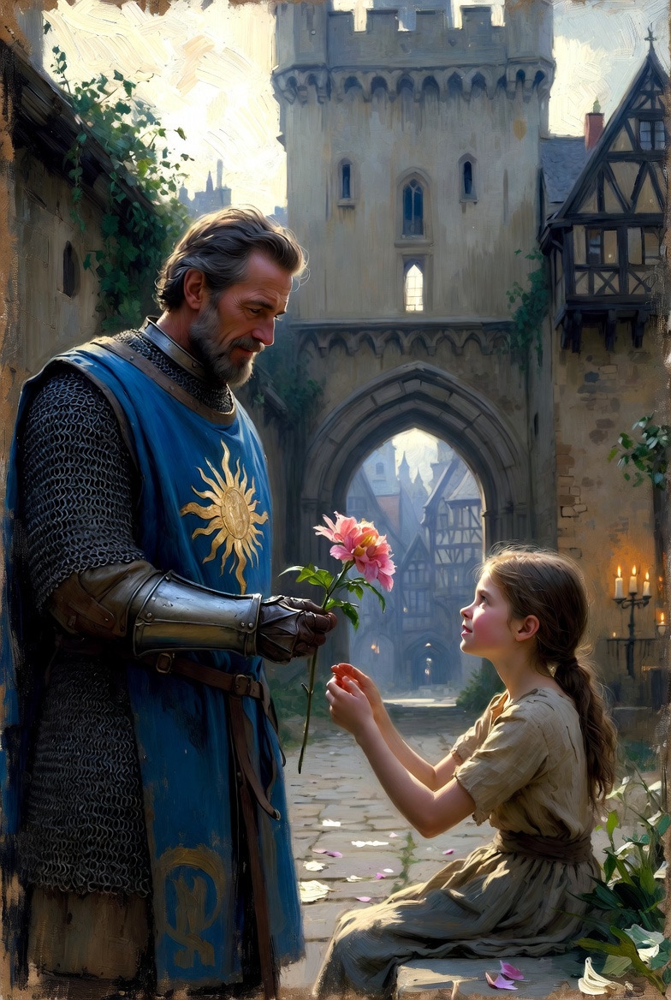

← Groups & GuildsKeepers of Volelia

Keepers of Volelia“That the Keepers shall restrain from warfare is a pious wish not easily in this woeful world to be granted.”
The Keepers of Volelia are a Delmaran order, remembered in both the past and present ages, devoted to mercy, wonder, honor, and service.
Tenets of Volelia
Cherish Life
- Defend those who cannot defend themselves
- Esteem life as greater than gain
- Grant hospitality to all according to your ability
- Strike justly, spare in mercy
Seek Wonder
- Pursue hospitality, beauty, and distress wherever they may be found, even in the unexpected
- Illuminate the paths of others
Serve Nobly
- Stand as a beacon of honor and integrity
- Place the needs of the many above personal ambition
- Honor your commitments